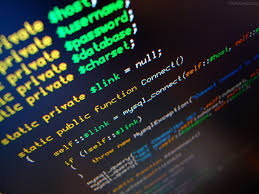
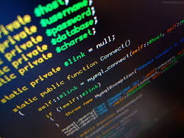

Aprenda com qualidade hoje, construa um futuro brilhante amanhã.
Informatica e suas tecnologia
A informática é uma área que abrange o estudo e a aplicação de tecnologias voltadas para o processamento e armazenamento de informações, desempenhando um papel fundamental na sociedade moderna. Ela facilita a comunicação, automatiza tarefas e oferece soluções em diversos setores, como saúde, educação, finanças e entretenimento. Ao longo dos anos, os avanços tecnológicos permitiram o desenvolvimento de componentes físicos mais potentes, como processadores rápidos e dispositivos de armazenamento de alta capacidade, além de possibilitar a criação de software capaz de executar tarefas complexas e específicas.
A conectividade global foi impulsionada pelo crescimento das redes, especialmente com o advento da internet, que permite a comunicação e o compartilhamento de dados em tempo real. O uso de redes sem fio, como Wi-Fi e 5G, expandiu ainda mais essa conectividade, tornando o acesso à informação possível em qualquer lugar. Com a crescente quantidade de dados sendo trocados, a segurança da informação tornou-se um aspecto crucial, focando na proteção contra ameaças cibernéticas por meio de tecnologias de criptografia e métodos de autenticação avançados.
A inteligência artificial (IA) é outro campo em destaque, proporcionando que máquinas realizem tarefas de maneira autônoma e aprendam com grandes volumes de dados, com aplicações que vão desde assistentes virtuais até o reconhecimento de voz e imagem. Além disso, a computação em nuvem tem transformado a forma como armazenamos e processamos informações, permitindo que grandes volumes de dados sejam gerenciados em servidores remotos, o que facilita o trabalho colaborativo e o acesso a serviços de qualquer lugar.
Essas inovações tecnológicas não apenas transformam a forma como vivemos e trabalhamos, mas também abrem caminho para novos desafios e oportunidades no futuro da informática, influenciando continuamente a sociedade e moldando a próxima geração de avanços.
 
